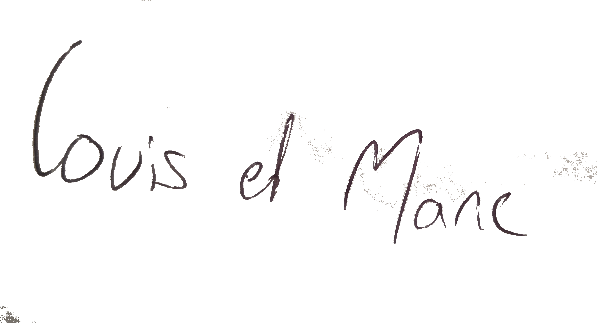

Qui sommes-nous ?
De l'idée à la conception
C'est lors d'une escapade où nous campions dans les bois qu'est née l'idée de Bucoli. Une nuit, autour du feu, nous rêvions d'un habitat plus confortable que notre tente du soir mais nous voulions en même temps rester cohérents avec nos valeurs de respect de la nature.
C'est ainsi que l'on a imaginé notre première Tiny House. Après des mois de conception & d'éco-construction, Bucoco est née et a pris ses quartiers en pleine forêt à 2h15 de Paris pour accueillir les échappées belles des urbains bucoliques.
C'est ainsi que l'on a imaginé notre première Tiny House. Après des mois de conception & d'éco-construction, Bucoco est née et a pris ses quartiers en pleine forêt à 2h15 de Paris pour accueillir les échappées belles des urbains bucoliques.